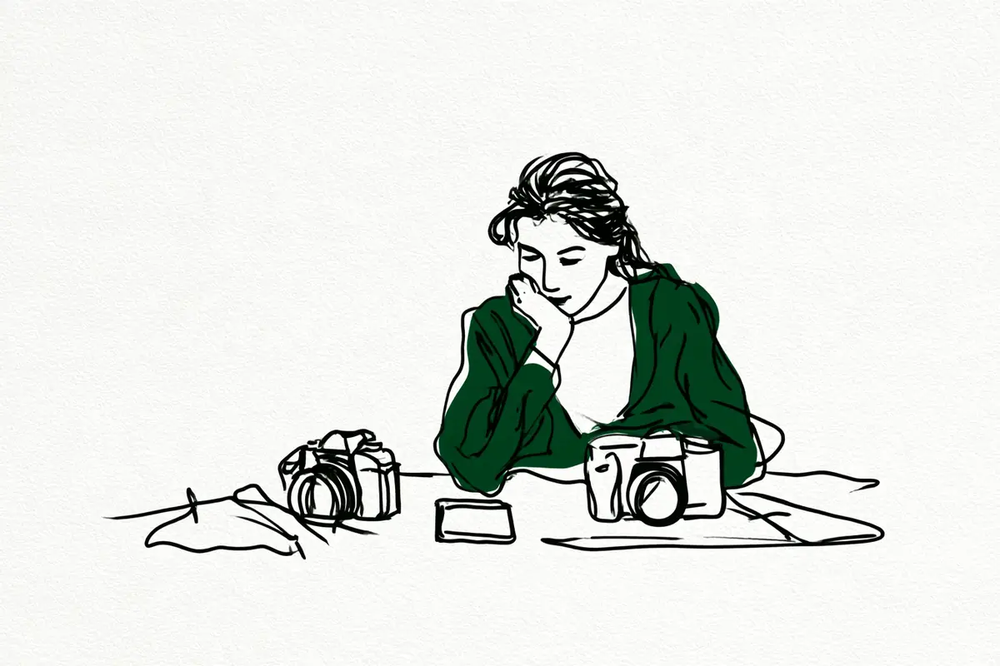

この記事には広告(アフィリエイトリンク)が含まれます。
現在地: 買う前に迷ってる
初めてのカメラ、最初の一台は何で決めた?後悔した人・満足した人の声

初めてのカメラ、最初の一台を何で決めたかと、その後どうなったかを、64人分読んで並べました。見た目で決めた人にも、安さで決めた人にも、満足した人と後悔した人の両方がいます。同じ決め手でも割れたので、この決め手なら大丈夫、とは言えません。代わりに、人によって分かれていた点を、自分の条件で確かめる問いにしました。
私はカメラを持っていないので、note・個人ブログ・知恵袋で、自分(または子ども)の最初の1台について書いた人の声を集めて整理する側です。買ったあとに後悔した理由そのものは、一眼レフを買ったけど後悔…にあるので、ここでは買う前の決め方と、始める順番を扱います。
- 全体を見たい → 決め手別の早見表と何を買ったかの集計
- 買う前に迷っている → 分かれ目を確かめる問い
- 順番だけ知りたい → お金のかからない順に試す
初めてのカメラを何で決めた? 決め手別の早見表
分け方は私の読み方で、1人が2つ以上の決め手に入ることもあります。人数は、その決め手を書いた人の数です。名前と年は、各節の本文に書きました。
| 決め手 | 人数 | 満足した例 | 後悔・買い替えた例 |
|---|---|---|---|
| 見た目・デザイン | 14人 | 中古を見た目で選び、後悔なし | 重くて持ち出さなくなった |
| 安さ・予算・中古 | 21人 | フリマの3万円未満で楽しむ | 安い入門機で物足りず3台 |
| 軽さ・持ち運び | 10人 | 店で触り別機種へ(不満も) | 軽いと読んだが思ったより重い |
| 店頭で触った感触 | 10人 | シャッター音で選び、長く使う | 後悔の声なし(下の注記) |
| 店員のすすめ | 7人 | 専門店で話し、予算の倍でも満足 | その場で買い、スマホの方がきれい |
| 知人・家族のすすめ | 6人 | すすめられた機種を今も使う | 重くて持ち歩かない |
| 撮りたいもの・用途 | 11人 | 撮りたい写真で選び、満足 | 用途のコンデジが物足りず次へ |
| 機能・スペック | 14人 | 使えるレンズの多さで後悔なし | 使えるレンズ探しが大変 |
| 勢い・なんとなく・見栄 | 9人 | 勢いで買い、今も持っている | 見栄で買って使っていない |
後悔の声の多くは決め手を書いていないので、店頭で触った人に後悔がないことと、決め手との関係は比べられません。決め手を書いていない人が10人、もらった・家にあったカメラが最初の1台だった人が3人います。
何を買った? 64人の集計
おすすめではなく、書いてあったことの集計です。種類の分け方は機種名から私が判断しました。
- デジタルの47人では、ミラーレス(センサーが見た映像を画面でのぞくタイプのカメラ)が28人、一眼レフ(鏡を使ってのぞくタイプ。言葉の意味)が12人、コンデジ(レンズを交換できない小型のカメラ)が5人、分からない人が2人
- 中古と書いた人が4人、新品と書いた人が2人。ほかは書いていません
- 本体とレンズのセット(レンズキット・ダブルズームキット)を買ったと書いた人が8人
- 書かれていた金額は、セットのレンズ込みで3万円未満(中古)から、中古店で約17.5万円まで。周辺の小物やバッグまで入れた総額を書いた人は1人で、約14万円でした
機種名は、ほとんどの人が書いていて、読んだ一覧の出典タイトルからたどれます。
64人の内訳と、数字の偏り
数えたのは、自分(または子ども)の最初の1台について書いた64人です。noteが40人、個人ブログが2人、知恵袋が22人で、うち11人は購入リンクか広告の表記があるサイトの書き手でした。その11人は満足側に多めです。この記事の広告リンクは、試したい人は、借りるの節のレンタル1つだけです。
結果を私の読み方で分けると、満足28人・満足と不満の両方10人・買い替え12人・後悔9人・買ったばかり5人。ここで先に、偏りを書いておきます。後悔と読んだ9人のうち7人は、知恵袋の「初めて買った一眼レフカメラで後悔した経験はありますか?」(その質問)への回答です。質問が後悔を聞いているので、後悔側に寄ります。一方noteは、買ったばかりの報告が多く、満足側に寄ります。だから、この決め手なら後悔しない、という因果は言えません。
範囲のずれもあります。コンデジから移って初めてレンズ交換式(レンズを付け替えられるカメラ)を買った人が3人、親が子どもに選んだ例が2人、10年離れて戻った人が1人。フィルム時代の話が9人、いつの話か分からない人が8人いて、本文では年を添えました。
買う前に、分かれ目を自分で確かめる
決め手より、その人の条件で結果が分かれていました。分かれていた点をそのまま問いにしたもので、答えが出なくても、どちらにも行き先があります。
- 見た目で選びたい気持ちがある? ある→見た目で決めた人の両方の声/ない→撮りたいもの・機能で決めた人
- 誰かにすすめられている? いる→すすめられて決めた人/いない→自分で決める材料は早見表に
- 買う前に試したい? 試したい→店頭で持つか借りる/すぐ買いたい→何を買う?へ
- スマホで困った場面・持ち出す日・レンズ込みの予算は? この3つは一眼レフを買ったけど後悔…の質問と重なるので、そちらに。どれも浮かばない人の行き先はスマホで撮ってみるの節にあります
見た目で決めた人: 後悔なしの人と、重くて持ち出さなくなった人
見た目で決めた14人は、私の分け方では満足した人が多めでした(分け方で順位は変わります)。19歳で初めてのカメラを中古で買ったばんりばさんの決め手は、見た目です。
後悔はしてないし、見た目が癖にぶっささりで最高です。
本体は4万円弱でも、レンズなどを足した初期費用に驚いた、とも書いています。
逆の例は、2023年の知恵袋にあります。一眼レフを買ったけど後悔…にも出てくる回答者です。
見た目で選んだが重くて持ち出すのが億劫になった。
2013年の知恵袋には、触って好みだったのは別のメーカーなのに、格好でニコンを選んだ人がいます(その回答)。多少の後悔はあるが、今は楽しんでいる、と。
安さ・中古で決めた人: 3万円で楽しんでいる人と、安い入門機を悔やんだ人
安さで決めた人は21人いて、ここも割れています。それまでコンデジを使っていたうにきらい!さんは、2013年発売の富士フイルム機をフリマで買いました。セットのレンズ込み3万円未満。機能は少ないが、値段を考えれば楽しい、と。ゆはるさんは、中古店のセールで価格差が2万円になったことが決め手で、1年保証つきの中古に満足しています。
反対側は、安さで選んで物足りなくなった人です。1980年代の話として、知恵袋にこう答えた人がいます。
何も知識なしに、ただ安いだけの入門機を買ったことですね。
入門機は、値段を抑えた入門向けの機種のことです。今はフリーカメラマンのユキカさん(カメラの紹介もしているサイトです)は、2017年ごろ、使うか不安で高い機種を買えませんでした。約5万円の入門機をネットで買い、物足りず3年で3台、最初の1台は無駄な買い物だったと振り返っています。本気でやるならフルサイズ(センサー=光を受け止める板が一番大きい規格。言葉の意味)、という結論は、プロになった人の振り返りです。
店頭で触って決めた人: 音・グリップ・重さ
店頭で触った感触で決めた10人には、後悔と書いた人が見当たりませんでした。ただし後悔の声の多くは決め手を書いていないので、比べられません。決め手になったのは、数字に出ないものです。たかはしなおみさんは、相談したキヤノンユーザーの決め手を聞いて、自分も同じ方法を取りました。
決め手は何だったのかを聞いたら、シャッター音で選んだ、と言っていた。
キヤノンとニコンの音を聴き比べ、心地よいと感じた方を選び、以来20年キヤノンを使っています。けやまるさん(商品の紹介もしているサイトです)も、量販店で3社の音を聞き比べました。
軽さ・持ち運びを決め手に書いた10人は、結果が割れています。小型カメラから初めてレンズ交換式に移ったAKGさんは、富士フイルムの試遊機が思ったより大きく重く、店で触ってしっくりきた機種にしました。
はじめは「写りの良いグッとくる写真」が撮れませんでした。
解説本と動画で調べ、単焦点(写る範囲が決まったレンズ。言葉の意味)を足してから満足した、と続く、両方を書いた1人です。ゆさん(商品の紹介もしているサイトです)は、レビューで小さくて軽いらしいと読み、量販店でも触り比べました。それでも買ってから「思ってたよりも重い。」と書いています。
すすめられて決めた人: 専門店の店員、友達、親
店員のすすめにも、知人や家族のすすめにも、両方の例があります。PONさんは、量販店の店員が詳しくなくて決められず、知人に教わったカメラ専門店の店員と話して決めました。どんな写真を撮りたいかで選ぶ、という説明で、予算の倍以上になっても満足しています。nicoさんは、友人がカメラを買ったのを見て家電量販店へ行き、店員にすすめられてその場で買いました。その後の感想は、両方です。
そして今のところ、普通にスマホのほうがきれいです。
それでも、雰囲気が好きで、撮る習慣ができた、と続きます。たかはしなおみさんは、2026年の買い替えで、人のすすめと商談会の店員に乗って比べずに買い、5日で手放すと決めました。最初の1台ではなく、2台目の例です。
友達のすすめは、2009年の知恵袋に両方の例があります。親友にすすめられたフィルムの一眼レフを、今も同じモデルで4台持っている人(その回答)と、こう書いた人です。
やはり重たかったので持ち歩くのが嫌になって“今日は写真撮るぞ!!”って時しか使わなくなりました…
親が子どもに選んだ例は2人です。Junvue CameraさんもフルリモートIT系パパさん(カメラの紹介もしているサイトです)も、自分が使っている系統の機種でした。2013年の知恵袋には、人のすすめについてこんな助言がありました。
そのときに人に勧められたカメラだったら、あきらめがつきません。
買ったあとは多かれ少なかれ後悔するから、自分で選べ、という文脈です。同じ質問には、店のおすすめは店にとってのおすすめだ、という見方の回答もありました。
撮りたいもの・機能で決めた人: 星空、使えるレンズ
撮りたいものが先にあった人でも、買ってから知ることはあります。初さんは、コンデジ・ミラーレス・一眼レフの3択から一眼レフを選びました。
その理由は、星空を撮りたい。という欲を感じたことにあります。
飽きないか不安だったので初期投資の安い一眼レフにし、良い選択だったと書く一方で、買ってから知った後悔もあります。本体にピント合わせ用のモーターがなく、使えるレンズ探しが大変だった、と。平田翼さん(カメラやレンズの紹介もしているサイトです)は、高校時代に買ってもらって10年離れた、本人いわく実質初心者です。他社製レンズが使えるかどうかを決め手にして、1年後も後悔なしです。
撮りたいものがはっきりしていても、機種はあとで変わります。野鳥用の超望遠コンデジで2年練習したコルリさんは、物足りなくなって次の機種を探しています。最初の1台で練習した経験が活きた、という書き方でした。
勢い・なんとなく・見栄で決めた人
勢いで買って今も持っている人と、見栄で買って使っていない人、両方がいます。Tokyo Street PIXさんは、撮りたいものもなく勢いで一眼レフを買い、今は路上写真家で、その1台をまだ持っています。文野巡さんは、まあいいか、で押し切って買い、重さを差し引いても楽しい、と。
逆に、知恵袋の2023年の質問には、見栄で買った、全然使っていない、という回答があります(その回答)。2026年の質問者は、調べずに憧れで買って数年、設定が分からず写真のザラザラに悩んでいました(その質問。仕組みは暗いところで撮れない…に)。
お金のかからない順に試す: スマホ・店頭・借りる・買う
ここからは、声を順番に並べ直したものです。順番は私の整理で、3は飛ばしてもかまいません。64人のほとんどは借りずに買っています。
1. 今のスマホで撮ってみる
買う前後にスマホと比べたことを書いた人は10人いました。ただ、練習期間として計画的にスマホを使った人は1人(うえだしょうごさん)でした。iPhoneで写真を勉強してから、妻に古いカメラをもらった人です(うえだしょうごさんのnote)。多くは、撮っていたら不満が出てきた、というきっかけとしてのスマホでした。
写真家のログカメラの書き手(商品の紹介もしているサイトです)は、まずスマホで撮り、夜景・動くもの・ボケで困ったら買い時だ、という立場です。2026年の知恵袋にも、もらい物のコンデジでまず撮り、撮りたいものが見えてから、という回答がありました(その回答)。
ここで足りれば、止まっていい場所です。買ったnicoさんは今もスマホのほうがきれいだと書き、ゆさんの夫はiPhoneで十分だと言いました。2025年の知恵袋には、そそっかしくて落とすので高いカメラは買わず、コンデジを4台使ってきた回答者もいます(その回答)。もらった・家にあったカメラから始めた人も3人いました。困った場面の見つけ方はスマホで十分、一眼はいらない?に、やめた人の声はカメラ趣味はやめとけ?にあります。
2. 店頭で持つ(無料)
店頭で決めた人の決め手は、シャッター音・グリップ・ファインダーの見え方・重さでした(上の節)。ニコンの入門メディアNICO STOPの説明では、選ぶ3つのポイントのうち使い心地は、重さや大きさが問題ないかで、こう続きます。
これは書かれている性能だけではわからない部分も多いから、お店で実際に手に持って確認してみよう。
ニコンの説明で、ほかのメーカーも同じ言い方かは確かめていません。重さは店頭で分かった、という例もあります。AKGさんは試遊機で大きく重いと分かって候補から外し、ビビさんはグリップの感触と心地よい重さの直感で再開の1台を決めました。2025年の知恵袋には、量販店で店員と話し、その場では買わなくていい、という回答もあります(その回答)。
3. 試したい人は、借りる
64人のほとんどは借りずに買い、店頭で触って決めて満足した人も多くいます(ゆはるさん、PONさん)。借りて試すことを勧めていたのは、知恵袋の回答者1人(レンタル店のリンク付き)、経験者のnote数件、レンタル事業者のメディアで、本人の体験は別です。最初の1台を買う前にレンタルサービスを使ったと明記した体験談は、64人の中でタマムシさん1人でした。
高価な物のため、いきなり購入ではなく、レンタルに。
通信会社の家電レンタルで、2024年当時は月7,800円、最短3か月でした。借りて分かったのは、重くてかさばること。3か月借りた時点の判断がこれです。
結論、保留。
その後、別の機種も借り、問題のなかったシリーズの新しい機種を買って満足しています。3か月借りても、続けるかはすぐには決まらなかった例です。逆に、知恵袋の常連回答者は、一日使えば自分に合うか合わないかが分かる、と書いています(その回答。レンタル店のリンク付きの回答です)。
2台目選びまで含めると、借りた人は4人です。コルリさんはどこで借りたかを書いていません。オレソトさん(商品の紹介もしているサイトです)はメーカーの週末レンタルキャンペーン、701さんは気になるレンズを借りる派です。レンタルで試して買わないと決めた人は、見つかりませんでした。借りずに買った側では、刺繍作品を撮るSHIHOさんが、レンタルを考えたうえで、ずっと使うからと先行投資しています。
無料の代わりは、店頭で持つこと、メーカーの週末キャンペーン、専門学校の無料体験講座で実機を借りたうえだしょうごさんの例です。メーカーのページで、まずレンタルを、と書いたものは今回見つけられませんでした。
借りて分かるのは、重さ・構えやすさ・操作です。読んだ声の中では少数ですが、店頭で分からないことを試したいなら、という私からの提案です。日単位で借りられるサービスと月額で借りられるサービスがあり、破損・紛失の補償、延長料金、送料と返却方法もサービスごとに違います。下のリンクは、タマムシさんが使ったサービスとは別のものです。
PR(広告)APEXレンタルカメラやレンズを借りられるサービス料金を見る料金・対象の機材・補償の範囲は、会社やプランで変わります。借りる前に、それぞれの公式サイトで最新の条件を確認してください。
4. 何を買う? 新品・中古・型落ちの声と予算
中古を最初の1台にした人は、読んだ中に4人います。
- 中古店で1年保証つき: ゆはるさん
- フリマ: うにきらい!さん
- 親が子に(13年前の機種): Junvue Cameraさん
- 買った先の記述なし: ばんりばさん
4人とも満足側でした。新品を買って3か月で買い替え、今は中古を勧める側に回った記憶カメラの書き手(商品の紹介もしているサイトです)もいます。一般論は割れていますが、フリマや個人売買は避ける、という点は両側で共通でした。写真家の藤井智弘さんは、1〜2世代前の旧モデルを中古に強い店で、という立場です。
初めてのデジタルカメラで個人売買はおすすめしません。
2026年の知恵袋のベストアンサーは新品推奨で、使い方も分からないうちは状態の良し悪しを見極められない、という理由でした(その回答)。
予算は、本体だけで考えると足りなくなった人がいます。ひびさんは本体・周辺アイテム・バッグで総額140,873円、ばんりばさんは中古でもレンズ込み6万円で初期費用に驚きました。比較サイトの価格.comの選び方ガイドは、初めてならレンズキットを勧めています。レンズの規格(マウント)が合わないとレンズを付けられない、という注意も。けやまるさんは、マウントでその後のレンズが決まることを買ってから知りました。メーカー公式でマウントの注意を明記したページは、今回は見つけられませんでした。フルサイズかどうかは、声では決まりません。なぎさんは「なんか綺麗に写るらしいフルサイズ」を新品最安で選び、平田翼さんは性格で選んでいます。
5. 買ったら最初に
買ってすぐやったことを書いた人は少なく、幅があります。全部オートで撮り始めたたけさん、3つの数字だけ勉強したばんりばさん、いきなりマニュアルの初さん。3日後に中古の単焦点を足したゆさん、解説本と動画で調べたAKGさんも。続きは、こちらの記事に分けています。
- オートから一歩出るなら → カメラのオートモードから抜け出せない初心者は、まずPモードから
- 室内や夜でブレる・ザラザラする → 暗いところで撮れない…
- 小物を何から買うか → カメラアクセサリーは初心者に必要?
- 重くて持ち出さなくなったら → 一眼レフが重くて使わなくなった…
最初から正解を選ばなくていい、と書いた人
64人を読んで残ったのは、同じ決め手でも結果が割れる、ということでした。後悔の声は決め手が書かれていないことが多く、どの決め手が後悔につながるかは比べられません。コンデジから始めて、兄の中古とゲーム機を物々交換した701さんの結びを置いておきます。
最初から正解のカメラを選ぶ必要もないし、最初から上手く撮れる必要もない。
次に読むなら
この記事で読んだ74件
体験談49件(64人の出典。本文で使わなかったものには注記)、体験談には数えなかった一般論・助言15件、事業者6件、検索上位の傾向を見るために読んだ4件に分けています。
体験談49件(64人の出典)
- note(ぐちお)「初めてのカメラ(X-M5)を購入」(持ち運びやすさで決め、買ったばかりで不安、2026年。本文では使っていません)
- note(ばんりば)「初めてのカメラが届いた📷」(見た目と中古の安さで決め、後悔なし、2026年)
- note(のた)「カメラ購入1年、超薄い感想」(決め手の記述なし、後悔なし、2026年。本文では使っていません)
- note(Chii)「いちばん最初のカメラ」(野鳥と使いこなせる重さで決め、お気に入りだった、2026年。本文では使っていません)
- note(nico)「カメラデビューしました」(店員のすすめで決め、スマホのほうがきれいだが習慣ができた、2026年)
- note(龍野銀次郎)「カメラデビューしました」(店に何度も通って決め、買ったばかり、2026年。本文では使っていません)
- note(_96shima)「X-T30Ⅲ」(コンデジから初めてのミラーレス、買ったばかり、2026年。本文では使っていません)
- note(コルリ)「45万円のカメラを借りたら、写真がうまくなると思ってた.....」(野鳥用のコンデジから、次の機種をレンタルで試す、2026年)
- note(Junvue Camera)「なぜ私は息子の最初のカメラに13年前の機種を選んだのか」(親が子に中古を選んだ、2026年)
- note(初)「カメラたのしい!」(星空を撮りたくて一眼レフ、良い選択だが使えるレンズの後悔も、2026年)
- note(ひゅるり)「子供が生まれて初めて買ったカメラ『Nikon Z fc』」(ファインダー・レンズ交換・見た目で決め、満足、2026年。PR表記、カメラの購入リンクあり。本文では使っていません)
- note(たけ)「カメラを始めた頃の写真と、今の写真」(憧れの人の影響で始め、最初は全部オート、2026年)
- note(Keiya)「カメラ初心者だった僕が、今でもSonyを使い続ける理由」(見た目と憧れの人で決め、使い続けている、2026年。本文では使っていません)
- note(なぎ)「私のカメラデビュー戦」(フルサイズ・新品保証・最安で決め、満足、2026年。購入は2020年)
- note(四つ葉)「初めて一眼レフを買った日」(販売員の声かけで入門機、期待外れから気づきへ、2026年。本の購入リンクあり。本文では使っていません)
- note(うにきらい!)「FUJIFILM Xシリーズ最安の機種で始める、カメラ生活【X-A1】」(フリマの中古を安さで決め、楽しんでいる、2026年)
- note(文野巡)「ついに一眼デビュー。世界が"ボケた"瞬間」(まあいいかで押し切り、楽しい、2026年。Amazonのリンクあり)
- note(moto.)「カメラにハマるまで。」(最初の一眼からレンズの径が理由で乗り換え、2026年。本文では使っていません)
- note(フルリモートIT系パパ)「長女の初めてのミラーレス一眼デビュー、半年使ってわかった、OLYMPUS PEN E-P7の得意と不得意」(親が娘に同じ機種を買い与えた、2026年。Amazonアフィリエイト明記、カメラの購入リンクあり)
- note(ひとりシラフ)「8年所持したNikon D5300を手放す。」(学生でも手が届く価格で決め、のちに持ち出さなくなり買い替え、2026年。本文では使っていません)
- note(AKG)「なぜOM-5を選んだのか」(小型カメラから、店で触った感触と軽さで決め、単焦点で満足、2026年)
- note(のこ)「写真を撮るようになって、好きなことが増えた」(初任給の記念に買い、のちに買い替え、2026年。本文では使っていません)
- note(ゆ)「スマホ写真卒業🌸カメラ初心者によるSONY α6400購入レビュー」(AFの速さで決め、思ったより重い・ボケない、2026年。楽天ROOMのリンクあり)
- note(Tokyo Street PIX)「私のカメラ遍歴」(勢いで買い、今も所有、2026年。Amazonのリンクあり)
- note(ビビ)「「あ、これだ」を信じて。Nikon Z50IIと始めるカメラ生活」(店頭で手に取った流れで決め、再開時はグリップの直感、2026年)
- note(701)「最初に買ったカメラと、今使っているカメラ」(無理しない価格のコンデジから、兄の中古へ、2026年)
- note(けやまる)「カメラ初心者がFUJIFILM X-T50を買って、写真を撮る楽しみを知った話」(コンデジから、シャッター音とファインダーで決め、マウントは盲点だった、2026年。Amazonの購入リンクあり)
- note(たかはしなおみ)「SONYα6400を買ったら5日で挫折した話。」(最初の1台はシャッター音で決めて長く満足、2台目はすすめられて比べず5日で手放すと決めた、2026年)
- note(ねこすこーぷ)「「フルサイズ vs APS-C」で悩み抜いた私が、α7IIIを買って辿り着いた本当の答え」(最初の1台を2年で手放した、2026年。本文では使っていません)
- note(タマムシ)「推しを綺麗に撮りたくて、一眼レフカメラを3ヶ月レンタルしてみた」(買う前にレンタルサービスで3か月試した、2024年)
- note(タマムシ)「推しを綺麗に撮りたい私(初心者)のカメラ&レンズ選び」(同じ人、レンタル後に買って満足、2026年)
- note(SHIHO)「カメラ買いました!!!」(レンタルを考えたが借りずに購入、2021年)
- note(ひび)「カメラを買ったよ」(店員の紹介とレビューで決め、総額も書いた、2026年)
- note(平田翼)「【実体験】カメラ初心者が何を考えてα7CⅡを買い、1年後どうなったか」(高校時代に買ってもらって10年離れた実質初心者、使えるレンズで決め後悔なし、2026年。Amazonアソシエイト明記、カメラ・レンズの購入リンクあり)
- note(ゆはる)「FUJIFILM X-S20とX-T30III どっちにするかめちゃくちゃ悩んだ話」(セールと店で触った感触で中古に決め、満足、2026年)
- note(PON)「これから産まれる我が子に贈る、わたしのファーストカメラ!」(専門店の店員の説明で決め、満足、2025年)
- note(うえだしょうご)「人生初めての一眼カメラを買った話」(妻にもらったカメラから、体験講座で借りて店員のすすめの中古へ、2025年)
- note(オレソト)「日常も大切にしたい人のフルサイズ LUMIX S9を1000円レンタルしてみた」(家にあったカメラが最初の1台、メーカーのレンタルで2台目候補を試した、2024年。Amazonアソシエイト明記)
- note(jyosui48)「はじめまして」(先輩から譲り受けた中古が最初の1台、2025年。本文では使っていません)
- note(cockatl)「初めてのミラーレスでGFX100 IIを1年半使った感想」(圧倒的な画質で決め、店員の値引きでその場で購入、2026年。ほかの人と価格帯が大きく違います。本文では使っていません)
- note(とっと)「最初の1台、どう選ぶ?初心者のためのカメラ選びガイド」(口コミ・見た目・量販店で実物確認で決め、満足、2025年。本文では使っていません)
- カメラのいろは(ユキカ)「初心者一眼レフを選んで失敗した話｜カメラ選びのエピソード」(安い入門機を選んで3年で3台、今はフリーカメラマン、2020年。広告・カメラの購入リンクあり)
- 記憶カメラ「人生初めてのカメラは、中古カメラで(が!)いいと思う。」(新品を3か月で買い替え、中古を勧める側へ、2023年。アフィリエイト広告の表記あり)
- Yahoo!知恵袋「初めて買った一眼レフカメラで後悔した経験はありますか?」(回答者9人を数えた。見た目・安さ・見栄・重い・使い方などの後悔と、後悔なしの回答、2023年。質問が後悔を聞いているため後悔側に寄ります)
- Yahoo!知恵袋「趣味でカメラを始めたいです。でも全くの初心者で…」(デザインで選んだ回答者、落とすので高いカメラは買わない回答者、量販店で話す助言、2025年)
- Yahoo!知恵袋「一眼レフ初心者です!…店員さんにいろいろ聞いてみたところ…」(格好で選んで多少後悔しつつ楽しむ回答者と、自分で選べという助言、店のおすすめは店の都合という回答、2013年)
- Yahoo!知恵袋「まったくのカメラ初心者です。数年前に特に調べたりせず…LUMIX FZ85を購入しました。」(調べずに憧れで買った質問者、2026年)
- Yahoo!知恵袋「カメラを買った時の理由、決め手を教えて下さい!」(回答者7人を数えた。友達のすすめ・安さ・見た目・衝動買いなど、多くはフィルム時代、2009年)
- Yahoo!知恵袋「あなたが最初に購入した一眼レフカメラは何でしたか?」(回答者2人を数えた。見た目と名前で選んだ、フィルム時代、2026年。本文では使っていません)
体験談には数えなかった一般論・助言15件
- note(あつほと)「カメラデビューと心がときめくカメラ」(心を奪ったカメラを買う、という一般論、2026年。本文では使っていません)
- note(ハタモト)「カメラを買う前に、好きな写真を探してみる」(持って触った感覚も手がかり、という一般論、2026年。本文では使っていません)
- ログカメラ「カメラ選びの前に!写真を趣味にしたいならまずはスマホで撮ってみよう!!」(写真家の一般論、2019年。広告を含む記事、購入リンクあり)
- 記憶カメラ「カメラはできれば、お店で実機をさわって買うのがいい。」(店で触る、という一般論、2026年。アフィリエイト広告の表記あり。本文では使っていません)
- Yahoo!知恵袋「初めてのカメラ皆さんおすすめはありますか?…」(一日使えば合うか分かるとレンタルを勧める回答、展示品を手に取る回答、2026年。回答にレンタル店のリンクあり)
- Yahoo!知恵袋「カメラ初心者で最初の1台を購入しようと考えています」(レンズのラインナップを見る、という助言、2026年。本文では使っていません)
- Yahoo!知恵袋「初めてカメラを購入しようとしています。予算は100000円程度…新品か中古か」(もらい物のコンデジでまず撮る回答、新品推奨のベストアンサー、2026年)
- Yahoo!知恵袋「安いものを試しに買ってみるか、8〜10万程度のものを買ってみるか」(高めを買って売ればいい回答、初心者に中古は勧めない回答、2022年。本文では使っていません)
- Yahoo!知恵袋「人生初のカメラが欲しいのですが、見た目で選ぶと後悔する確率が高いですか?」(見た目で選ぶことに肯定的な回答が大半、実機を持って撮る助言、2024年)
- Yahoo!知恵袋「初めてのカメラは何が良いですか?…ヤフオクとかメルカリで中古の古いものを」(中古は手に取って見る店で、という回答、2026年。AI名義の回答は数えていません。本文では使っていません)
- note(あかうさ)「カメラで悩むくらいなら、一度使ってみればいい話」(数日借りてみたい、という経験の長い人の一般論、2026年。アフィリエイト表記、フリマのリンクあり。本文では使っていません)
- note(いくみ)「初心者にNikonのミラーレスカメラを買わせたかった」(買う前のレンタルを勧め、店頭の派遣スタッフに注意、という一般論、2025年。本文では使っていません)
- note(SOREGASHI)「道具を買う前に借りてみる。「レンタル趣味」という始め方」(レンタルを試着室にたとえる趣味メディア的な記事、2026年。本文では使っていません)
- note(藤井智弘)「【カメラ初心者🔰向け】初めてのレンズ交換式デジタルカメラ、中古はアリ？」(写真家の一般論、旧モデルを中古に強い店で、2026年)
- ザブログ「自分が思う、初めてのカメラの選び方」(信頼できる店で中古を、という一般論、2025年公開・2026年更新。本文では使っていません)
事業者6件(体験談として数えていません)
- ニコン NICO STOP「【カメラの選び方】自分に合った一台を選ぼう!3つのポイントを解説!」(メーカーのメディア、2022年)
- キヤノンオンラインショップ「〜初めての方向け〜カメラの選び方」(メーカー直販。本文では使っていません)
- 価格.com「デジタル一眼カメラの選び方【選び方のポイント】」(比較サイト)
- カメラのキタムラ ShaSha「ソニー ミラーレスカメラとレンズの選び方(入門編)」(カメラ販売店のメディア、2025年。本文では使っていません)
- SUUTA Magazine「【2026年】カメラ初心者おすすめ機種は?選び方と10選」(カメラレンタル事業者のメディア。迷うならレンタル、と自社サービスへ誘導する立場)
- SUUTA Magazine「中古カメラはやめたほうがいい?」(同じレンタル事業者のメディア。本文では使っていません)
検索上位の傾向を見るために読んだ4件(体験談には数えていません)
- note(ma_ko)「ミラーレス初心者が後悔しやすいのは、カメラ選びより「買った後」を考えていないから」(一般論、2026年。Amazonリンク多数)
- note(ma_ko)「カメラを始めたいけど、最初に何を買えばいいのか分からない。」(一般論、2026年。Amazonアソシエイト明記)
- note(kamux2)「【買ってから後悔したくない!】カメラ初心者が絶対に避けるべき「カメラ選びの3つの落とし穴」」(一般論、2025年。Amazonリンクあり)
- 俺のデジモノ手記「最初の一台の選び方｜スペックではなく、自分との「対話」で選ぶ」(一般論、2026年。購入リンクあり)
引用は2026-10-03時点で各ページを閲覧して確認しました。